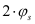

|
|
|


额定载荷
此处可输入四种组合数据：
- (A) 力和倾覆力矩
- (B) 力和倾覆
- (C) 位移和倾覆力矩
- (D) 位移和倾覆
速度：内圈相对于外圈的速度。外圈始终假设为固定（非旋转）。
振荡角：部分旋转轴承的振荡角。额定寿命（以百万振荡循环次数为单位）根据[2]确定。
轴计算注意事项： 轴计算过程的默认设置为组合 D。
注意： 一个完整的振荡是

English Original
Rating (load)
Four combinations of data can be entered here:
- (A) Force and Tilting moment
- (B) Force and Tilting
- (C) Displacement and Tilting moment
- (D) Displacement and Tilting
Speed: the speed of the inner ring relative to the outer ring. The outer ring is always assumed to be fixed (non-rotating).
Oscillating angle: the oscillating angle for partially rotating bearings. The rating life in million oscillation cycles is determined according to [2].
Note for the shaft calculation: The default setting for the shaft calculation process is combination D.
Note: A complete oscillation is